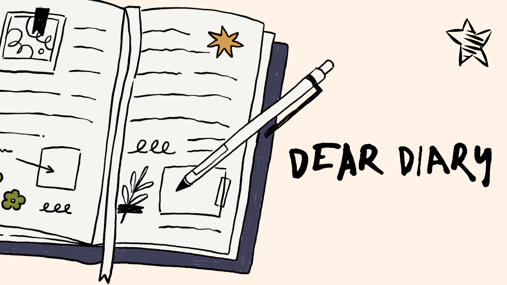

Transition from easily damaged, easily lost, and easily used up physical diaries. Release yourself from paper diaries. Keep a digital copy of your delicate paper diaries!
Take a record of all the precious memories! Even when you can't remember the memories, you'll have a digital backup to remind you of the moments!
For people who like to make friends and share moments of their lifes, this is exactly the place to be! Come and share precious moments in life! Without even noticing, you might be making new friends!
Take a moment from life to slow down to look around.